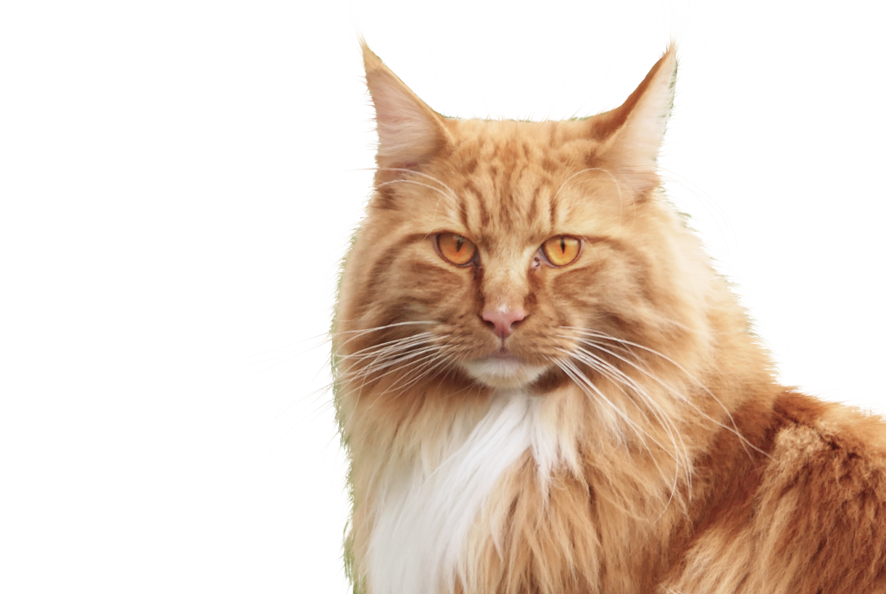

Все представители нашего питомника имеют ветеринарный паспорт с отметками о прививках и документ с родословной
Мейн-Кун - это порода, которая вызывает к себе уважение. Приобретая в свой дом этого питомца, вы получите умное животное, которому нет равных
 Легко уживается в семьях с детьми или другими животнымиВыполняет команды как дрессированная собакаВес может достигать 12 кг, а длина 1 мВнешний вид этой кошки похож на дикую рысь
Легко уживается в семьях с детьми или другими животнымиВыполняет команды как дрессированная собакаВес может достигать 12 кг, а длина 1 мВнешний вид этой кошки похож на дикую рысь
Приобретая животное в нашем питомнике, вы получите
Мы разработали 8 правил, следуя которым, шерсть вашего кота всегда будет блестящей, мягкой и послушной
Нужно ли стричь когти? Это мы и выясним, плюс ко всему расскажем как подобрать идеальную когтеточку
Все сотрудники нашего питомника дипломированые специалисты в области фелинологии и ветеринарии
Мы ответим на самые популярные ваши вопросы
Есть важная причина, почему котенка стоит забирать домой только после трех месяцев, — это вакцинация. Первые прививки животному делают в возрасте 8 недель. Ревакцинация проводится через 3–4 недели. То есть котенок, покидающий дом позднее 12 недель, максимально защищен от различных вирусов и инфекций.
Так что, чтобы в дома появился психически и физически здоровый котенок, игривый, жизнерадостный, самостоятельный и воспитанный, не спешите забирать его от кошки-мамы раньше трех месяцев.